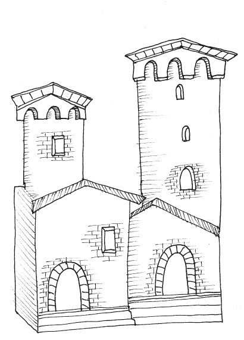

Primero describiré la región de Armenia. Hay dos Armenias, la Mayor y la Menor. En el reino de Armenia la Menor, todos poseen grandes riquezas, y allí se elaboran los tapices más hermosos de todo el mundo, con los colores más extraordinarios, y muchos paños de seda roja. Es una región fértil y hay mucha caza de animales y aves. El aire es sano y los habitantes de esta Armenia fueron en la Antigüedad valientes guerreros. Hay una ciudad al lado del mar que se llama Glaza, a la que arriban mercaderes de Venecia, de Génova y de otras muchas regiones. A esta ciudad se llevan muchas mercancías de especias y otros preciosos tesoros. Allí van todos los que quieren entrar en las tierras de Oriente.

Armenia la Mayor es una región muy amplia donde hablan la misma lengua. La ciudad más importante se llama Arcingán, donde poseen el mejor y más hermoso algodón del mundo. Tienen allí agua hirviendo que sale a borbotones, con la que hacen muy excelentes baños. Durante el verano viven allí muchos tártaros con sus rebaños y ganados, ya que hay pastos muy buenos, y en invierno bajan de la montaña, por causa de la nieve. En mitad de Armenia la Mayor está la montaña donde descansó el arca de Noé. La montaña es tan alta y hay siempre tanta nieve que nadie nunca puede subir. El Arca se puede ver desde lejos, pues hay un lugar donde dicen que se puede ver un objeto oscuro, en medio de las nieblas. Hay también una gran fuente de la que sale un líquido parecido al aceite, que no sirve para la comida, pero que es excelente para ungüentos y lámparas.
Ahora hablaré de la región de Georgia, donde se cuenta que los monarcas nacían con la señal de un águila sobre el hombro. En esta provincia hay muchas ciudades y aldeas y se hacen allí muy bellos paños de seda y oro. La tierra es fértil y los hombres son muy hermosos, y son mercaderes y artesanos. Allí existe un gran lago, donde entra el río Eufrates, uno de los cuatro ríos del Paraíso.
En la frontera de Armenia la Mayor se encuentra el reino de Mosul donde habitan los árabes que adoran a Mahoma, y se encuentra también la ciudad de Baudac, que en las Escrituras se dice que habita el jefe que llaman «califa». En aquellas regiones, sucedió algo maravilloso en el año 1275. Había allí un califa que sometía a todos los cristianos y un día leyó en el evangelio que si un cristiano tenía fe, así fuera como un grano de mostaza, podía con la fuerza de sus oraciones mover un monte de un lado a otro. Entonces, el califa les dijo a los cristianos que habitaban bajo su dominio que trasladasen en el nombre de Cristo el monte o se convirtiesen todos a Mahoma; de lo contrario, morirían todos por la espada. Entonces un zapatero muy devoto, profirió con fe una oración al señor Jesucristo y trasladó al lugar señalado aquel monte. Ante este milagro, muchos sarracenos se convirtieron y se hicieron bautizar.
Ahora hablaré de la región de Persia, una inmensa provincia antiguamente muy famosa, donde está la ciudad de Sava, de donde partieron los tres Reyes Magos, que fueron a adorar a Jesús, y donde están enterrados. Allí pude ver los tres cuerpos enteros, con el cabello y la barba intactos, como si estuvieran vivos. Aquí sus habitantes adoran el fuego, porque dice una leyenda que los tres reyes, después de adorar al niño, recibieron de él una piedra. Como no sabían la razón del regalo, pensaron que era una burla y la arrojaron en un pozo. De inmediato, una inmensa llama surgió del fondo y los reyes, asombrados, tomaron de ese fuego y lo llevaron a su país, donde no se apaga nunca.
Después de relatar este hecho maravilloso, hablaré de otras regiones de Persia.
Al llegar a una gran llanura aparece la ciudad de Camandí, que antiguamente fue muy grande y floreciente, pero ahora está destruida por los tártaros. Hay allí dátiles, pistachos y manzanas del Paraíso, y crecen también muchos otros frutos en gran abundancia, que no se dan entre nosotros. Viven infinidad de aves, y unas que se llaman francolines, de color blanco y negro y las patas y el pico de color rojo. Los otros animales son también diferentes a los de cualquier otro lugar. Hay bueyes que tienen el pelo blanquísimo, corto y sobre el lomo tienen una joroba como los camellos. Hay carneros grandes como asnos que tienen una cola grandísima, son gordos y muy bellos y excelentes para comer. En esta llanura habitan muchos bandidos hechiceros, que, cuando quieren saquear una región, hacen que el aire se oscurezca durante días y en una extensión tan grande que nadie los puede ver. Yo, Marco, caí en una de aquellas tinieblas, y estuve a punto de quedar preso y ser asesinado por estas gentes, pero logré huir. Todo esto es verdad, pero hablemos ahora de otras regiones.
Al salir de esta llanura, se encuentra uno con un desierto por el que hay que avanzar para atravesarlo ocho días de camino; la aridez allí es tan inmensa, extrema, que no crecen árboles ni frutos; sus aguas son amargas y malas. Después de estos ocho días se llega al reino de Tunocán, donde hay muchas ciudades y aldeas; la región se halla en los últimos confines de Persia. Hay allí una gran llanura en la cual se encuentra el Árbol Solo, que los latinos llaman Árbol Seco. Es un árbol grande y grueso, que tiene hojas blancas por un lado y verdes por otro; da unos frutos parecidos a las castañas, en cuyo interior no hay fruto ninguno; la madera de este árbol es sólida y resistente, y de color amarillo como el boj. A un lado de este árbol, en una distancia de diez millas sólo crece un árbol, pero de los otros lados no crece ningún árbol en cien millas a la redonda. Allí cuentan que tuvo lugar la batalla entre Alejandro Magno y Darío, rey de los persas. Allí habitan hombres hermosos y mujeres hermosas; sin embargo, todos adoran a Mahoma.
Después de doce días de camino, se llega a Taicán, una región donde hay mucho trigo y otros granos. Es una región muy hermosa. Tienen unas montañas altísimas y algunas son sólo de una sal blanca y de muy buen sabor, y su dureza es tan grande que no se puede coger ni un grano si no es con picos de hierro. Esta sal es tan abundante, que todo el mundo podría tener suficiente hasta el final de los tiempos. Otras de estas montañas también tienen abundancia de pistachos y almendras. Después se anda a lo largo de tres días y se llega a la ciudad de Scassem que está en la llanura y tiene muchos castillos en las montañas; un gran río cruza por medio de ella. En aquella región hay muchos puercoespines. Cuando los cazadores los acosan con perros, los puercoespines, juntados en uno, se menean con gran saña y arrojan las púas que tienen en el dorso y sus costados contra los perros y los hombres, y a menudo hieren a muchos. Esta gente tiene su propia lengua. Los pastores de la comarca residen en las montañas, donde hacen sus moradas en cavernas. Después se avanza durante otros tres días hasta la provincia de Balascia; en ese viaje no se encuentra ningún poblado, ni se puede obtener en el camino comida o agua. Por eso los viandantes llevan consigo agua y comida.
Balascia es una provincia que tiene lengua propia. Se dice que sus reyes descienden de Alejandro Magno. En los montes de esta región se encuentran piedras preciosas finas y de gran belleza, que se llaman balasci por el nombre de la tierra. Si alguien excava o saca alguna piedra de éstas sin licencia del rey perdería la vida y se confiscarían sus bienes, pues todas las piedras pertenecen al soberano. En otro monte de esta provincia se encuentran también las piedras de lapislázuli, de las que se hace el mejor azul de todo el mundo. Sus hombres son excelentes cazadores. Se visten de cuero, pues no pueden tener vestidos de lana ni de lino, que son muy caros. Yo Marco Polo, el autor de este libro, pude saber que en esta región hubo en un tiempo caballos que descendían de Bucéfalo, el caballo de Alejandro Magno, que podían subir al galope cualquier montaña y llevaban al nacer una estrella y un cuerno en la frente.
Hay también en este reino montañas donde el aire es tan puro que, cuando alguien se ve aquejado de alguna enfermedad, sube a las cimas y la enfermedad desaparece de inmediato. Yo Marco Polo puedo asegurarlo, pues lo comprobé por mí mismo, ya que estando allí estuve enfermo por un año y cuando subí a las montañas me recuperé. Todo ha sido cierto, pero ahora dejemos esta región para hablar de la gran ciudad de Samarcanda.
Samarcanda es una ciudad grande y hermosa, llena de jardines, donde se dan todos los frutos que uno pueda desear. En aquella región habitan juntamente los cristianos y los que adoran a Mahoma, que se llaman sarracenos, todos súbditos de un sobrino del Gran Khan. En esta ciudad sucedió algo extraordinario que ahora contaré.
No hace mucho tiempo, un hermano del Gran Khan, llamado Cogatay, que gobernaba en ella, se convirtió al cristianismo y recibió el bautismo. Entonces los cristianos, contando con el favor del príncipe, edificaron una gran iglesia en memoria de San Juan Bautista. Para construirla tomaron una hermosa columna de mármol, que había pertenecido a los sarracenos. Estos se enojaron por el robo de la piedra, pero por temor al príncipe Cogatay permanecieron en silencio. Sucedió entonces que murió el príncipe, a quien sucedió su hijo muy joven y que aún no aceptaba el cristianismo. Los sarracenos así consiguieron que los cristianos se viesen obligados a devolverles su piedra. Los cristianos les ofrecieron oro y tesoros a los sarracenos, pero éstos no aceptaron, pues estaban decididos a llevarse la piedra. Como los cristianos no encontraban la manera de retirar la piedra sin destruir la iglesia, comenzaron a invocar a San Juan Bautista con súplicas llorosas. Así sucedió el milagro que ahora contaré, pues al llegar el día en que había que retirar la piedra de debajo de la columna, por voluntad divina la columna se separó de su base y se mantuvo con toda la carga en el aire. Hasta el día de hoy se mantiene así sin ningún apoyo, y este es uno de los más grandes milagros ocurridos en todo el mundo.
Después de varios días de camino por otras regiones, se llega a la ciudad de Lop, situada a la entrada de un gran desierto, también llamado de Lop que, según cuentan, es un desierto tan largo que uno tarda un año atravesando su parte más ancha. Desde la ciudad de Lop, los viajeros emprenden el camino a través del yermo. En el desierto el agua que se encuentra es amarga y sólo hay agua dulce en tres lugares y a muchas millas de distancia. Todo el desierto está pelado y no hay animales por la falta de alimento. Durante el trayecto sucede una maravilla que ahora contaré.
La gente de esta región ha visto y comprobado que allí de día y de noche viven muchos espíritus, que provocan en los viajeros ilusiones para hacerlos morir. Si alguno se rezaga y el grupo desaparece después de una colina o montaña, los espíritus le hablan por el aire, fingiendo ser sus amigos. A veces lo llaman por el nombre, y otras veces lo hacen perder la ruta, obligándolo a seguir sus voces. Quien los sigue nunca alcanzará la caravana y nadie volverá a saber nada de él y este nunca podrá volver. Muchos han escuchado estas voces, y también han escuchado ruidos de tambores y otros instrumentos musicales. Otras veces, durante el día, los extraviados ven caravanas a las que siguen hasta que quedan solos en el desierto.
Todas estas maravillas parecerán difíciles de creer, pero todo ha sucedido así como he contado aquí. Pero ahora, después de pasar peligros y angustias, seguiré hablando de las regiones situadas más allá de este gran desierto de Lop.
Cercana al borde del desierto, se encuentra una región muy extensa llamada Iuguristán y que pertenece al Gran Khan. Hay allí numerosas ciudades y pueblos, y sus habitantes adoran a los ídolos. Cuentan que el primer rey que gobernó esta tierra no era de la raza de los hombres, sino que había nacido de una seta llamada esca, alimentándose de la savia de los árboles. Se dice que de este rey descienden todos los demás. Aquí los hombres están dedicados al estudio de todas las artes y el invierno es el más frío de ninguna otra región conocida del mundo. Saliendo de esta región se entra a otra provincia donde existe una montaña altísima en la que se encuentra una mina de la que los habitantes extraen una piedra llamada salamandra, que aunque se ponga en mitad del fuego no arde nunca, y es la mejor piedra que se pueda encontrar en todo el mundo. Pero esta piedra que digo no es una serpiente, ni tampoco otro reptil, y tampoco es cierto que el tejido que nunca se quema haya nacido de la piel de un animal que vive en el fuego, como se cree en nuestras tierras. Se sabe, por naturaleza, que ningún animal puede vivir en el fuego, pues todos se componen de cuatro elementos: fuego, aire, tierra y agua. Nunca he oído hablar de este reptil en las regiones de Oriente, y todo lo que dicen de esto es sólo mentira y fábulas. Este tejido que no se quema se hace de la tierra, como aprendí de un compañero turco, que me enseñó cómo en aquella montaña había un hilo parecido a la lana, que después de extraerlo de las minas, lo secan al sol, lo trituran, lo lavan con agua, y después lo usan para elaborar sus tejidos. Estos tejidos son blancos porque los arrojan al fuego y nunca se queman, sino que se ponen blancos como la nieve. Todo que lo he escrito es verdadero y lo cuento como lo escuché y lo vi.
Después de terminada la travesía por las regiones del desierto se llega a la ciudad de Caracorum. Ha llegado el momento de hablar del Gran Khan, el senor y rey de todos los tártaros, pues fue en esta ciudad donde comenzó el señorío y el imperio de los tártaros. Antes de venir aquí, habitaban en una gran llanura donde no había ciudades ni aldeas, sólo grandes ríos y pastos, y eran súbditos de un gran rey al que llamaban Uncán, que en su lengua quiere decir Gran Señor. Este es el rey que nosotros llamamos el Preste Juan, famoso en todo el mundo por su gran poder. Sucedió que cuando el pueblo de los tártaros empezó a crecer y se multiplicó, el monarca Preste empezó a temer que toda esta multitud le pudiera hacer daño si decidiera rebelarse. Entonces, para que esto no sucediera, pensó dividirlos y mandarlos a diversas regiones. Los tártaros se negaron a separarse unos de otros y entonces cruzaron todos juntos el desierto, de modo que el rey Preste Juan no los pudiera castigar. Al cabo de algunos años, en 1187, eligieron entre todos como rey a un hombre llamado Gengis Khan. Tras su coronación, todos los tártaros se sometieron a su dominio.
Gengis Khan gobernó con gran sabiduría y justicia; en breve tiempo ganó muchas regiones y todos sus súbditos lo amaban. Al verse con tanta gloria, quiso conquistar la mayor parte del mundo, y en el año de 1200, envió mensajeros al rey Preste Juan, solicitando a su hija por esposa. El rey recibió la petición como una gravísima ofensa y dijo que antes arrojaría a su hija al fuego que entregarla a un esclavo suyo, y expulsó de su vista los mensajeros de Gengis Khan. Al oír esto, Gengis Khan reventó de cólera y reunió un ejército incalculable, el mayor que haya existido nunca, y se dirigió a las tierras del rey Preste Juan para atacarlo. Antes de la guerra, los astrólogos le dijeron a Gengis Khan que él vencería al rey Preste Juan y todos los tártaros se alegraron mucho. Así, al tercer día del combate cayeron muchos de un ejército y de otro, pero Gengis Khan resultó vencedor y el rey Preste Juan murió, y de esta manera los tártaros dominaron por completo su tierra.
Gengis Khan reinó por seis años y conquistó muchas otras provincias. Al cabo de los seis años, al sitiar un castillo él mismo se acercó a pelear ante la plaza y fue herido en la rodilla con una flecha, herida de la que falleció a los pocos días. Fue enterrado en una gran montaña llamada Altai, donde desde entonces han recibido sepultura todos los monarcas del reino de los tártaros que descienden de la estirpe de Gengis Khan, que han sido cinco antes de Kublay Khan, que es quien reina todavía, y cuyo poderío es mayor que el de sus cinco predecesores.
Ahora hablaré de las costumbres de los tártaros. Por lo general, crían rebaños de bueyes, caballos y ovejas, y nunca residen en el mismo lugar. Durante el verano habitan en las montañas y en los lugares fríos, donde hay pasto y leña, y durante el invierno van a las regiones calientes, donde puedan encontrar alimento para el ganado. Viven en cabañas en forma de tiendas recubiertas de pieles, que llevan consigo cada vez que se trasladan a otro lugar, pues las pueden doblar y extender y transportar con facilidad. Tienen también carretas arrastradas por camellos o bueyes, y adentro llevan a toda su familia, con instrumentos y todos los víveres que necesitan en su camino. Sus mujeres son, a mi parecer, las más admirables del mundo por sus virtudes.
Los hombres usan armaduras fuertes y resistentes de cuero de búfalo o de otro animal que tenga piel dura. Llevan mazos y espada y son excelentes arqueros, entrenados desde niños a esta práctica. Sus trajes están revestidos de oro, y se alimentan de carne y leche, tanto de animales puros como impuros, pues comen carne de caballo y perro, y también de unos animales parecidos a los conejos que en nuestra tierra llamamos ratas del Faraón, que se encuentran en suma abundancia en las llanuras. Beben leche de yegua que es muy sabrosa y que en su lengua se llama kumis.
Después de haber hablado de algunas de las costumbres de los tártaros, pasaré ahora a describir otras regiones. Después de salir de la ciudad de Carocorum y del monte Altai, y pasar por otras regiones, se encuentra la gran provincia de Tangut. Allí hay unos bueyes salvajes hermosísimos, grandes como elefantes; su cuerpo está cubierto por un pelaje blanco, y en el lomo les nacen pelos negros de varias palmas de longitud. Muchos son mansos y están domados y acostumbrados a llevar grandes cargas. En esta tierra existe el mejor almizcle que hay en el mundo, que se extrae de un animal que es muy hermoso y tiene el tamaño de un gato, lo pelos gruesos como un ciervo y las patas como un gato; tiene cuatro dientes, dos arriba y dos abajo, y de tres dedos de longitud; junto al ombligo tiene, entre la carne y la piel, una vejiga llena de sangre, y aquella sangre es el almizcle, y toda la tierra tiene este aroma, pues hay allí una cantidad infinita de estos animales. También hay faisanes el doble de grandes que en Italia, y tienen la cola de diez o nueve palmas de longitud y, como mínimo, de ocho o siete; hay también otras aves bellísimas de distintas especies, con plumas hermosas y adornadas de diversos y muy hermosos colores.
Después se pasa a la provincia de Tenduch, donde hay ciudades y muchas aldeas, en las que solía residir aquel gran rey Preste Juan. En aquellas tierras están las regiones que en nuestras tierras llamamos Gog y Magog. Sin embargo, aquí a Gog lo llaman en su lengua Ung, y a Magog lo llaman Mongul. Por esta razón a los tártaros también los llaman mongoles. En esta provincia se hacen paños de oro y de seda muy hermosos. Hay allí una ciudad donde se fabrican armas de todo tipo, finísimas y muy buenas para las necesidades del ejército. En las montañas de esta comarca hay grandes minas de plata. A tres días de camino de esta ciudad se halla la ciudad de Ciangannor, donde se levanta un enorme palacio en el que habita el Gran Khan cuando visita la ciudad, pues va a menudo allí porque en los lagos vecinos se encuentran cisnes, grullas, faisanes, perdices y un número infinito de aves. El rey, en efecto, recibe gran placer en la captura de las aves con sus halcones. Las grullas son allí de cinco clases. La primera especie de grullas tiene las alas grandes y son negras por completo; la segunda tiene las alas más grandes que las demás, y las plumas de sus alas están llenas de ojos redondos de color y resplandor dorado, como las colas del pavo real; tienen los ojos de varios colores, blanco, negro y azul. La tercera especie la forman unas grullas semejantes a las de Italia. La cuarta la forman grullas pequeñas, con plumas largas y bellísimas, con colores rojo y negro. La quinta especie corresponde a grullas de color gris, que tienen los ojos rojos y negros, y son muy grandes.
A tres días de camino se encuentra la ciudad de Ciandú, construida por el Gran Khan Kublai, en la cual hay un palacio de mármol muy grande y hermoso, cuyas salas y habitaciones están adornadas de oro y pintadas con dibujos de animales, árboles y flores de muchos colores. Junto al palacio se encuentra el bosque del rey, rodeado por muros de mármol. En ese bosque hay fuentes y ríos y muchos campos; hay ciervos, gamos y cabras, que sirven de alimento a los halcones del rey cuando los guardan en su muda. A veces el monarca caza allí y lleva a la grupa del caballo que monta un leopardo domesticado, que azuza contra un cervatillo o un gamo, y cuando el leopardo le ha traído la presa, se la da a los halcones.
En medio del bosque tiene el rey un bellísimo palacio hecho de bambú y dorado totalmente por fuera y por dentro y adornado con muchas pinturas de aves y toda clase de animales. El Gran Khan habita allí durante tres meses al año, en junio, julio y agosto, ya que allí el aire es más fresco y el verano no es tan caluroso; durante esos meses permanece alzada la casa, que en los restantes se guarda desmontada y plegada. El día ventiocho de agosto el Gran Khan sale de la ciudad de Ciandú. El rey posee grandes manadas de caballos blancos, con más de diez mil yeguas blancas. Estos animales son muy respetados por el pueblo, pues ningún caminante se atreverá a pasar hasta que no haya cruzado todo el ganado.
Quiero contar algo extraordinario que olvidé relatar antes. Cuando el Gran Khan se encuentra en su palacio, siempre hay lluvia y niebla. El Gran Khan tiene entonces a su lado unos sabios, magos y astrólogos, que con su ciencia y hechizos suben al techo del palacio y ordenan a las nubes, a la lluvia y al mal tiempo que se alejen de la casa de su señor, y así nunca vuelve a llover sobre el palacio.
Hay también allí muchas clases de encantadores que nadie lo podría creer. Existen unos llamados basci, que adoran muchos ídolos y hacen encantamientos maravillosos y terribles como ahora voy a contar. Cuando el Gran Khan se encuentra en su gran salón listo para comer, sentado frente a su mesa, que está mucho más arriba que las de todos los demás, y las copas de oro están puestas como a diez pasos de donde está el rey, llenas de vino, leche y otras bebidas deliciosas, los hechiceros y encantadores hacen que estas copas vuelen por el aire hasta la mesa del Gran Khan, y lo hacen así para que nadie más las toque.
Cuando el rey ha terminado de beber, las copas vuelven una vez más a su sitio, y todo esto sucede frente a diez mil testigos, pues el Gran Khan quiere que vean estos prodigios. Y todo esto es verdadero, sin ninguna mentira, como lo he relatado. Y es importante agregar que los sabios de nuestras tierras aseguran que estos portentos de verdad pueden suceder. Hay allí también otros monjes llamados sensin. Son hombres que viven con muchos sacrificios, pues comen muy poco y ayunan muchos días a lo largo de todo el año y sólo beben agua. Pasan casi todo el tiempo de su vida haciendo oración y por esta razón llevan una vida muy dura.
Pero dejemos de hablar de esto y pasemos a relatar los extraordinarios hechos y las maravillas del Señor de los Señores, emperador y monarca de todos los tártaros del mundo, el poderoso y muy noble Gran Khan, llamado Kublai Khan.
Aquí acaba el primer libro escrito por Marco Polo de Venecia
*